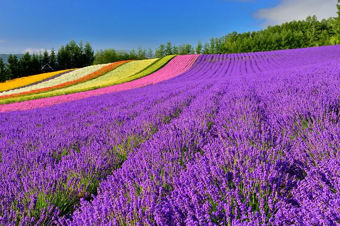
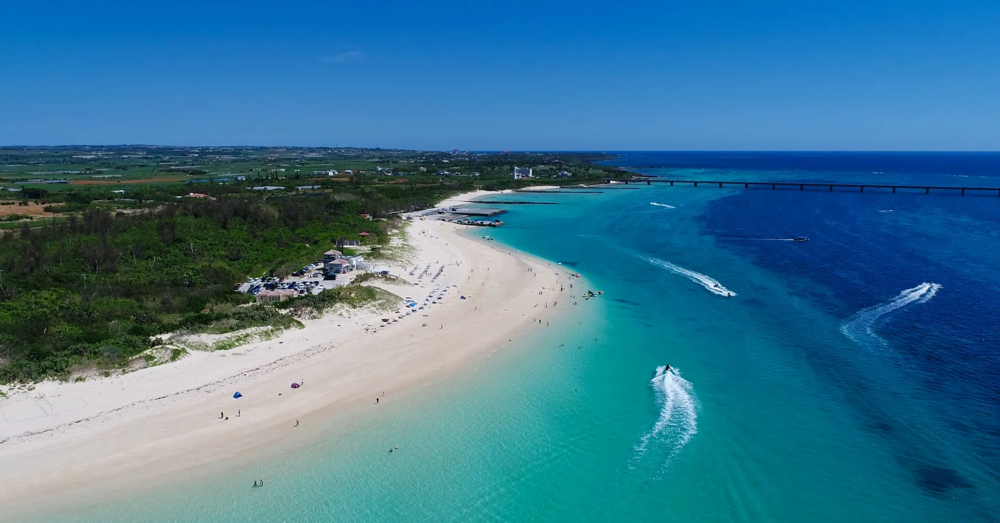
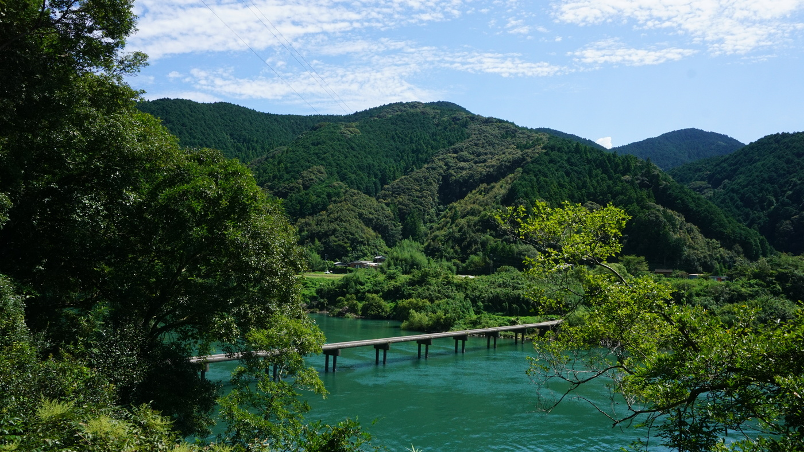

01 FURANO, HOKKAIDO
北海道・富良野
色と香りに包まれる
ラベンダー畑
丘を埋め尽くすラベンダーと、幾重にも重なる花の帯。広い空の下で鮮やかな色彩を眺めながら、北海道らしい伸びやかな夏を感じられます。
- 一面の花畑
- 丘の風景
- 爽やかな空気
ACCESS MAP

MIYAKOJIMA OKINAWA
PLACES TO VISIT
北から南へ、日本の夏は表情豊かです。花の色、海の青、森と川の緑。気分に合わせて、心に残る夏景色を選んでください。

01 FURANO, HOKKAIDO
北海道・富良野
丘を埋め尽くすラベンダーと、幾重にも重なる花の帯。広い空の下で鮮やかな色彩を眺めながら、北海道らしい伸びやかな夏を感じられます。
ACCESS MAP
02 MIYAKOJIMA, OKINAWA
沖縄県・宮古島
白い砂浜の先に、淡い水色から深い青へと移ろう海が広がります。空と海の境目を眺めるだけでも、日常から離れた穏やかな時間を過ごせます。
ACCESS MAP

03 SHIMANTO, KOCHI
高知県・四万十川
深い緑に囲まれた川面と、景色に溶け込む沈下橋。水の音や木々を渡る風を感じながら、ゆっくりと流れる夏の時間を楽しめます。
ACCESS MAP
TRAVEL NOTE
移動時間や休憩を見込み、詰め込みすぎない旅程にすると景色をゆっくり楽しめます。
こまめな水分補給と休憩を心がけ、帽子や日よけも準備して出かけましょう。
地域のルールと自然環境に配慮し、訪れた場所の美しさを次の人へつなげましょう。